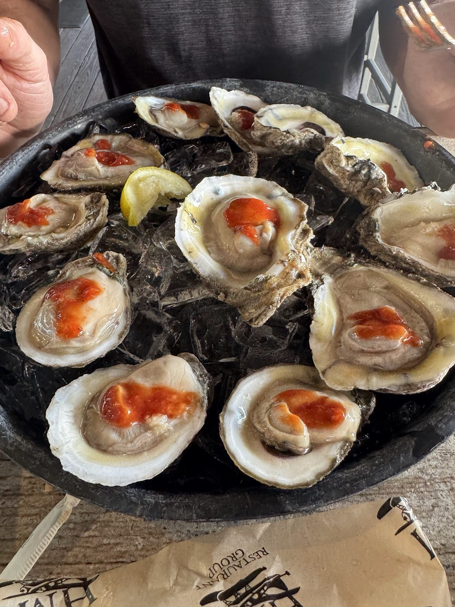
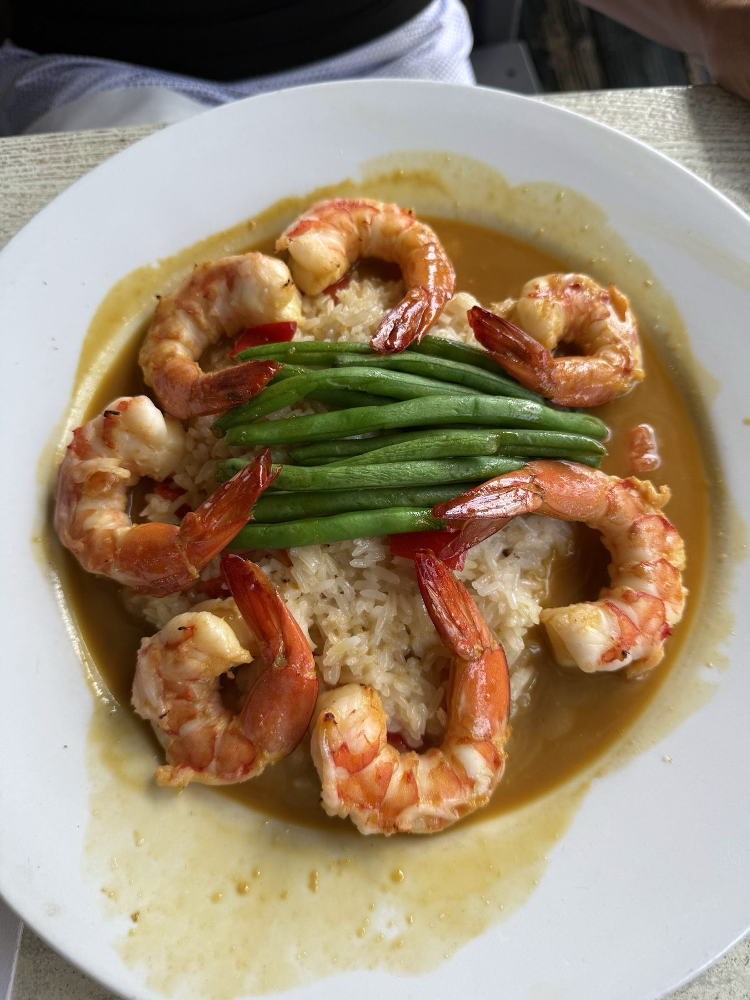

Shellfish bar
Oysters on the half shell, peel and eat shrimp and Yucatan baked oysters.
Boca Ciega · Treasure Island
Boca Ciega Waterfront Bar & Grill serves Treasure Island from St. Petersburg.
Coming from Treasure Island? Boca Ciega Waterfront Bar & Grill is in St. Petersburg, at 8790 Bay Pines Blvd. Seafood and cold drinks on Boca Ciega Bay.
Come hungry
From the shellfish bar to the entrees.

Oysters on the half shell, peel and eat shrimp and Yucatan baked oysters.

Crab cakes, shrimp fritters, crispy calamari and coconut shrimp to share.

Crab stuffed grouper, cedar plank salmon, orange ginger shrimp and shrimp and crab scampi.
4.4 ★ · 1751 Google reviews
First time here and the food was amazing! I had the seafood Paella and it was delicious! I’m a big wedge salad fan and it is also berry good here. Lemon did an incredible job with recommendations and keeping the drinks flowing. My wife has a lot of food restrictions and was able to get the orange ginger shrimp with asparagus. She cannot have dairy, so they made the asparagus without, and it was incredibly flavorful.
So happy with the name change to Boca Ceiga Waterfront Bar & Grill. Service and food was amazing. Cold beers. Tried 2 new menu items. Shrimp fritters and shrimp burger. Soo good we might have to go back tomorrow for them again. Highly recommend!
I’ve been to this Doc Ford’s location a few times and as always, it was a nice experience!! We were a part of a large party and our server, Haily, was excellent!! All the staff that assisted her with our table were also great!! We all had a nice variety of foods & drinks from the menu which were flavorful, in addition to looking great!!